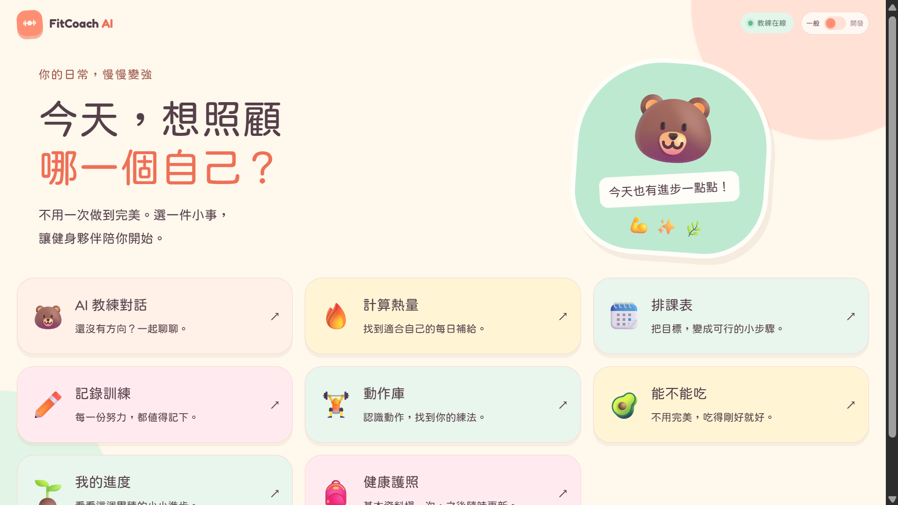
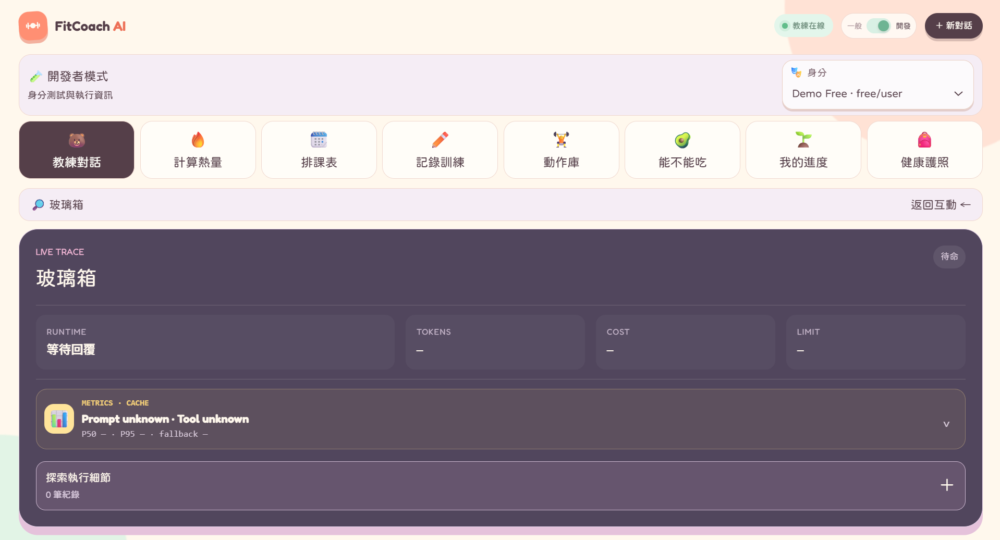

AI 教練對話
依程度與問題難度分派專科教練，提供符合當下需求的訓練與飲食建議。
01
不是只有聊天介面，而是一套能理解問題、選擇教練、調用工具並完成健身任務的服務。
依程度與問題難度分派專科教練，提供符合當下需求的訓練與飲食建議。
以程式計算 TDEE 等精確數字，再由教練說明如何落實於日常飲食。
把目標、程度與時間條件轉為可執行課表，並保留修改與確認流程。
寫入前由使用者確認，避免誤記；以可靠交易保存每一次訓練成果。
查詢專業知識並嵌入對應教學影片，讓建議能直接連到下一步行動。
02
精確的數字、連結、授權與寫入交給 code；語意判斷與任務協作交給 LLM。能確定性完成，就不額外呼叫模型。
MULTI-AGENT ROUTING
MCP TOOL LAYER
LAYERED MEMORY
SAFE WRITES
OBSERVABILITY
RELIABILITY
03
把 Agent 的內部決策變成可觀察資訊，而不是只看到最後一句回答。 親自開啟開發者模式


04
LangGraph · LangChain · OpenAI Agents SDK
OpenRouter · 多模型 Routing · Embedding · Qdrant · SQLite
Multi-Agent · ReAct · Planning／Plan-and-Execute · Reflection · Structured Output · Dynamic Tool Selection · Agent Skills
Tool／Function Calling · MCP（自建＋第三方）· RAG · fitness-data MCP · YouTube MCP
Guardrails · Human-in-the-Loop · Idempotency · Transaction · Authorization · Prompt Cache · Tracing／Observability · Evals · Reliability／Fallback · Cost Budget
Docker · Zeabur · stdio MCP
LIVE PROJECT